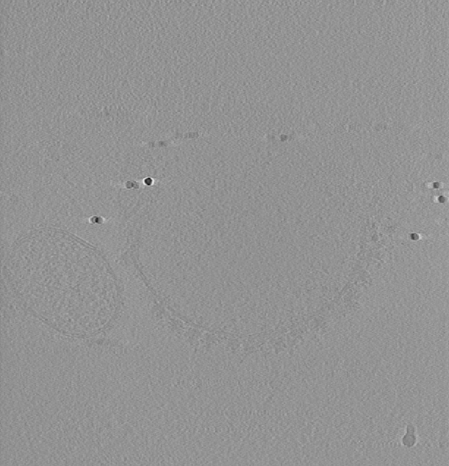
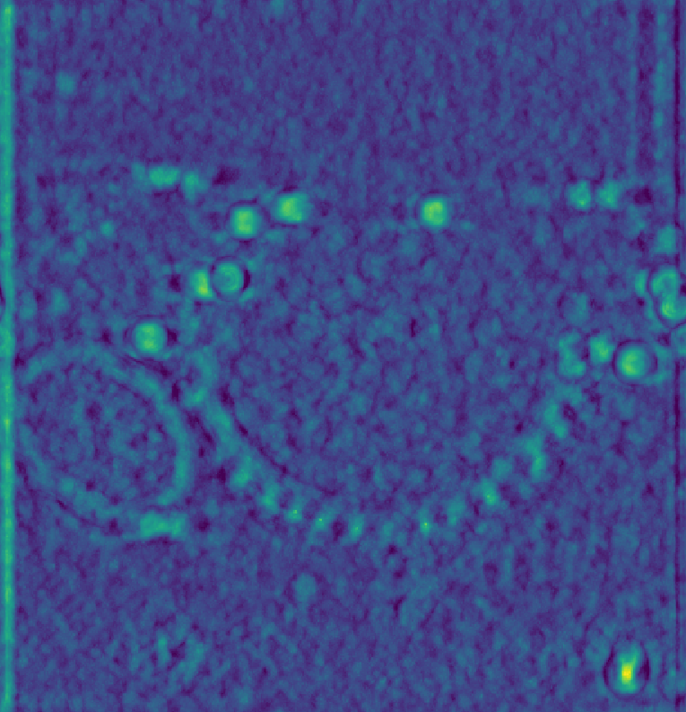
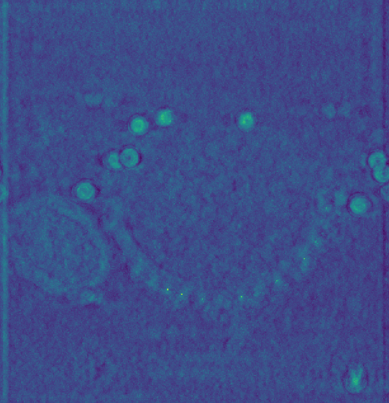

Picking Ribosomes#
This tutorial demonstrates how to identify and extract ribosome locations from cryo-electron tomograms using template matching. You will learn
How to prepare templates and masks for template matching
How to run template matching with various filtering options
How to interpret and optimize template matching results
Data Acquisition#
For this tutorial, we use data from EMPIAR-10988. You will need to download
EMPIAR-10988/
└── data/
└── DEF/
├── tomograms/
│ └── TS_037.rec # Main tomogram file
└── metadata/
└── mdocs_modified/
└── TS_037.mdoc # Tilt series metadata
As 80S ribosome template, we will use EMD-3228
wget https://ftp.ebi.ac.uk/pub/databases/emdb/structures/EMD-3228/map/emd_3228.map.gz
Your working directory should now contain
tutorial_directory/
├── TS_037.rec # Tomogram
├── TS_037.mdoc # Metadata
└── emd_3228.map.gz # Template
Template and Mask Generation#
EMD-3228 has a different sampling rate than our tomogram, so we need to resample it to match. We can do this using the API (see Density.resample) or using preprocess.py.
preprocess.py \
-m emd_3228.map.gz \
--sampling-rate 13.48 \
--box-size 70 \
--invert-contrast \
--output emd_3228_resampled.mrc
Larger boxes enable more accurate frequency operations and are essential for oscillating filters like the CTF. As a rule of thumb, set the box size to about twice the minimum enclosing box of your structure.
Note
The cisTEM tool simulate is a good alternative for template generation.
The mask defines which parts of the template to use for matching. We can use the napari GUI to create the mask visually. Since we inverted the template contrast above, make sure to use the Invert Contrast filter when viewing the template.
Alternatively, you can create the mask programmatically
from tme import Density
from tme.matching_utils import create_mask
mask = create_mask(
mask_type="ellipse",
radius=(13,13,13),
center=(34.50,34.50,34.50),
sigma_decay = 1,
shape=(70,70,70)
)
mask = Density(mask, sampling_rate=13.48)
mask.to_file("emd_3228_resampled_mask.mrc")
Your prepared template and mask should look similar to the projection below
{kind=link}
Template (left) and mask (right) for template matching#
Template Matching#
For demonstration purposes we are going to process a subset of the data. However, the procedure for the full tomogram would be identical.
from tme import Density
# Load the full tomogram
dens = Density.from_file("TS_037.rec")
# Extract a subset for faster processing (X: 100-400, Y: 450-750, Z: 150-450)
# This creates a 300x300x300 voxel region containing multiple ribosomes
dens.data = dens.data[100:400, 450:750, 150:450]
# Save the subset for template matching
dens.to_file("TS_037_subset.mrc")
The code below will run template matching, taking about 1-2 minutes on a consumer-level GPU or 5-10 minutes on CPU (if you are running on CPU, make sure to set the number of cores via --cores).
match_template.py \
--target TS_037_subset.mrc \
--template emd_3228_resampled.mrc \
--template-mask emd_3228_resampled_mask.mrc \
--lowpass 40 \
--angular-sampling 8 \
--output output_default.pickle
Tip
For GPU acceleration: add --backend cupy (NVIDIA, or pytorch/jax) or --backend jax (M-series Mac).
You can inspect the results in the GUI by clicking the Import Pickle button. The figure below shows a lowpass-filtered representation of the tomogram subset on the left and the corresponding template matching scores on the right. Bright spots in the score map indicate potential ribosome locations, the brighter the spot the better the match.
Overall, the majority of ribosomes appear to be accounted for. However, note that
Wide peaks: Multiple high-scoring voxels around each ribosome
False positives: Some bright spots on membranes and gold markers
{kind=link}
{kind=link}
Parameter Comparison#
The following outlines common filtering approaches to improve template matching results. When processing cryo-ET data, you should at least use missing wedge correction, and add CTF if you have the parameter estimated. Background normalization can be useful to reduce the contribution of dense areas to template matching scores, e.g., membranes or fiducial gold markers. Bandpass filters are useful when specific frequency ranges contain information irrelevant for template matching. Spectral whitening enhances weak signals but may overamplify noise.
Missing wedge correction accounts for the anisotropic resolution in tomograms. The template can be modulated using either a continuous wedge or a more accurate per-tilt mask. For a continuous wedge mask
match_template.py \
--target TS_037_subset.mrc \
--template emd_3228_resampled.mrc \
--template-mask emd_3228_resampled_mask.mrc \
--lowpass 40 \
--tilt-angles 35,35 \
--angular-sampling 8 \
--output output_contwedge.pickle
For a step wedge mask
match_template.py \
--target TS_037_subset.mrc \
--template emd_3228_resampled.mrc \
--template-mask emd_3228_resampled_mask.mrc \
--lowpass 40 \
--tilt-angles TS_037.mdoc \
--angular-sampling 8 \
--output output_stepwedge.pickle
Instead of binary masks, the wedge can also be weighted based on the cosine of the tilt angle or the electron dose to more faithfully recapitulate the data acquisition process. For instance, to reproduce the weighting scheme of relion
match_template.py \
--target TS_037_subset.mrc \
--template emd_3228_resampled.mrc \
--template-mask emd_3228_resampled_mask.mrc \
--lowpass 40 \
--tilt-angles TS_037.mdoc \
--tilt-weighting relion \
--angular-sampling 8 \
--output output_weightedstepwedge.pickle
Continuous wedge mask# |
Per-tilt wedge mask# |
Weighted per-tilt wedge mask# |
{kind=link}
{kind=link}
{kind=link}
Tip
The --tilt-angles argument can directly use Warp/M XML files, mdoc, tomostar and text files. The latter contain either the tilt angles as single value per line, or two tab-separated columns with column names ‘angles’ and ‘weights’.
CTF correction recovers high-resolution information and produces sharper peaks with better separation of closely spaced ribosomes. In the simplest case, a single defocus value can be provided, assuming constant defocus throughout the volume. 3D CTFs can be created using Warp/M XML, tomostar, mdoc, and ctffind4 files (use match_template.py --help to see all available formats for the ctf file).
For constant 3µm defocus (30000 Å)
match_template.py \
--target TS_037_subset.mrc \
--template emd_3228_resampled.mrc \
--template-mask emd_3228_resampled_mask.mrc \
--defocus 30000 \
--amplitude-contrast 0.08 \
--acceleration-voltage 300 \
--spherical-aberration 27000000.0 \
--angular-sampling 8 \
--output output_ctf.pickle
The CTF can be specified per tilt to create a 3D CTF filter. However, note that the CTF parameter estimates in the MDOC file are only a starting point, and should be replaced by estimates from dedicated software for optimal results.
match_template.py \
--target TS_037_subset.mrc \
--template emd_3228_resampled.mrc \
--template-mask emd_3228_resampled_mask.mrc \
--ctf-file TS_037.mdoc \
--amplitude-contrast 0.08 \
--acceleration-voltage 300 \
--spherical-aberration 27000000.0 \
--angular-sampling 8 \
--output output_3dctf.pickle
{kind=link}
{kind=link}
Tip
Using a 3D CTF will implicitly apply a step wedge mask. [Experts] the approach by which the 3D CTF is constructed from 2D tilts can be modified using --reconstruction-filter and reconstruction-interpolation-order for optimal results.
Background normalization reduces the contribution of dense cellular features to template matching scores and helps handle contamination artifacts. In the simplest case, a noise version of the current template can be used for normalization
match_template.py \
--target TS_037_subset.mrc \
--template emd_3228_resampled.mrc \
--template-mask emd_3228_resampled_mask.mrc \
--lowpass 40 \
--scramble-phases \
--angular-sampling 8 \
--output output_scramble.pickle
We then use the scores obtained from the noise template to normalize our observations. Note, that you do not need to use a noise template for this, but in principle any other cellular component you would like to avoid, e.g., membranes, fiducial markers or alternative macromolecules.
postprocess.py \
--input-file output_default.pickle \
--background-file output_scramble.pickle \
--output-format pickle \
--output-prefix output_norm.pickle
{kind=link}
Template matching scores for background normalization#
Note
We use --output-format pickle for visualization. There is no need to create this intermediary file in practice.
Bandpass filtering removes specific frequency ranges that may contain artifacts or noise while preserving the relevant structural information. This is particularly useful when low frequencies are dominated by cellular background or high frequencies contain excessive noise.
match_template.py \
--target TS_037_subset.mrc \
--template emd_3228_resampled.mrc \
--template-mask emd_3228_resampled_mask.mrc \
--lowpass 40 \
--highpass 400 \
--angular-sampling 8 \
--output output_bandpass.pickle
{kind=link}
Template matching scores for bandpass filter#
Spectral whitening flattens the power spectrum to enhance weak signals across all frequencies, which can improve detection of ribosomes in noisy regions. However, this approach may also amplify noise, so it should be used judiciously depending on the signal-to-noise ratio of your data.
match_template.py \
--target TS_037_subset.mrc \
--template emd_3228_resampled.mrc \
--template-mask emd_3228_resampled_mask.mrc \
--lowpass 40 \
--whiten \
--angular-sampling 8 \
--output output_whitening.pickle
{kind=link}
Template matching scores for spectral whitening#
Remarks on Tomogram Preprocessing#
We have seen that template matching performance can be improved using a variety of strategies. However, ultimately, it’s limited by the quality of the experimental data.
Denoising approaches have recently found popularity, due to their ability to generate visually appealing tomograms. However, that does not necessarily make them more suitable for template matching. Cross-correlation-based template matching is fairly robust towards Gaussian and Poisson noise, which is commonly removed in denoising, leading to an overall reduction of high-frequency information. It is, however, the high-frequency information that enables truly unambiguous template matching [1]. Albeit not possible to draw a general conclusion, denoising is most likely not the place to start if template matching is not working.
Instead, processing before tomogram reconstruction, such as tilt-series alignment and CTF correction should be prioritized. To demonstrate the utility of CTF correction, we use a tomogram that was CTF corrected using IMOD’s phase-flip (source).
Shown below is the raw data on the left, baseline scores in the middle, and on the right using a CTF-corrected template, which reproduces the results from Chaillet et al. [2].
  {kind=link}
{kind=link}
{kind=link}
The figure above was generated using the following template
wget https://ftp.ebi.ac.uk/pub/databases/emdb/structures/EMD-2938/map/emd_2938.map.gz
preprocess.py \
-m emd_2938.map.gz \
--sampling-rate 13.79 \
--box-size 60 \
--invert-contrast \
--output emd_2938_resampled.mrc
and a spherical mask
from tme import Density
from tme.matching_utils import create_mask
mask = create_mask(
mask_type="ellipse",
radius=(12,12,12),
center=(30,30,30),
sigma_decay=1,
shape=(60,60,60)
)
mask = Density(mask, sampling_rate=13.79)
mask.to_file("emd_2938_resampled_mask.mrc")
CTF parameters were omitted from the command below to compute baseline scores
match_template.py \
--target tomo200528_100.mrc \
--template emd_2938_resampled.mrc \
--template-mask emd_2938_resampled_mask.mrc \
--lowpass 40 \
--defocus 30000 \
--amplitude-contrast 0.08 \
--spherical-aberration 27000000.0 \
--acceleration-voltage 200 \
--angular-sampling 6
Next Steps#
Extract ribosome coordinates using postprocessing.